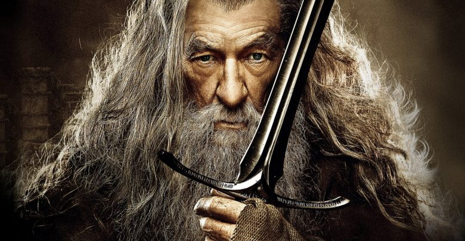
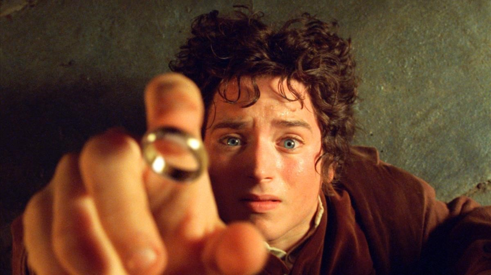
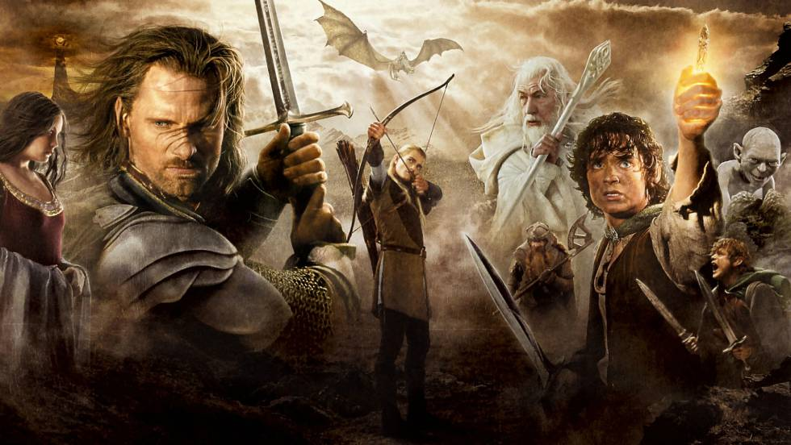

Introducción
La trilogía cinematográfica de El Señor de los Anillos, basada en la novela homónima del escritor británico J. R. R. Tolkien, comprende tres películas épicas de fantasía,
acción y aventuras: El Señor de los Anillos: la Comunidad del Anillo (2001), El Señor de los Anillos: las dos torres (2002) y El Señor de los Anillos: el retorno del Rey (2003).
Las tres películas fueron escritas, producidas y dirigidas por Peter Jackson, coescritas por Fran Walsh y Philippa Boyens y distribuidas por New Line Cinema.
Considerado como uno de los mayores proyectos cinematográficos nunca acometidos, con una recaudación global de más de 2900 millones USD, el proyecto completo duró ocho años,
con la filmación simultánea de las tres películas y rodadas enteramente en la tierra natal de Jackson, Nueva Zelanda.

Éxito
La trilogía tuvo un gran éxito de taquilla, alcanzando las tres películas los puestos 26.º, 19.º y 6.º de las más taquilleras de la historia.
También fueron aclamadas por la crítica, obteniendo un total de diecisiete premios Óscar, diez premios BAFTA y cuatro premios Globo de Oro, así como amplias alabanzas
hacia el reparto y las innovaciones en lo referente a efectos especiales digitales.
Cada película de la trilogía tuvo una «edición especial extendida», lanzada un año después del lanzamiento en DVD de la versión proyectada en las salas de cine.

Efectos
Para la trilogía se utilizaron innovadoras técnicas y efectos visuales digitales. La primera película cuenta con alrededor de 540 efectos, la segunda 799 y la tercera 1488 (2730
en total).
El total se incrementa hasta 3420 en las versiones extendidas. 260 artistas de efectos visuales trabajaron en la trilogía, y el número se duplicó para Las dos torres.
El equipo técnico, encabezado por Jim Rygiel y Randy Cook, trabajó duro haciendo horas por las noches, obligado a producir efectos especiales en un corto espacio de tiempo por
la imaginación hiperactiva de Jackson.
Por ejemplo, varias de las secuencias principales de la Batalla del Abismo de Helm fueron generadas en las últimas seis semanas de postproducción de Las dos torres, y lo mismo
volvió a ocurrir en las últimas seis semanas de El retorno del Rey.
A pesar de que Weta Workshop fue la principal responsable de la mayor parte de los efectos visuales de las películas, la escena donde Arwen confronta a los Jinetes Negros en
La comunidad del anillo fue hecha enteramente por Digital Domain.